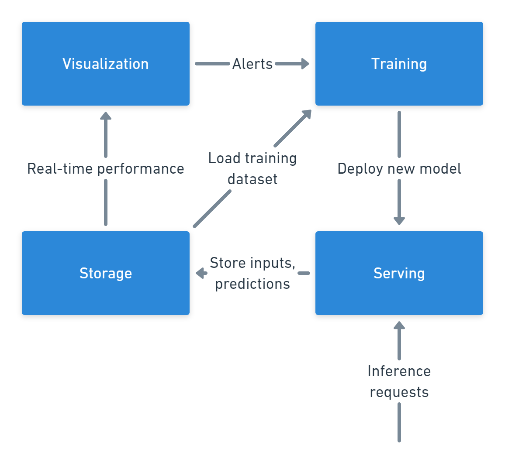

About me
Machine Learning Engineer interested in Bayesian statistics, programming languages, and quantitative finance.
Resume
Projects
2022
-
Ma chi voto? (Who to vote?)
In September 2022, Italy had its 19th national political election. I have built, along with Augusto Colongo, and Pietro Valfrè, "Ma chi voto?" a website that allows users to discover how much their opinions align with each politicaly party.
We launched the website in collaboration with Will, an instagram-based newspaper highly popular among the Italian youth. Despite the record-low voter turnout, the websited launch has been wildly successfull with almost half a million users interacting with the website and completing the poll over 10 days.
The website was powered with a cloud-native architecture, leveraging the scalability of GCP's Cloud Functions and PostgreSQL via GCP Cloud SQL. At its peak, it handled over 200 requests per second.
-
Kaggle competitions
In this year, I have participated to a bunch of Kaggle competitions (in reverse chronological order):
• Tabular Playground Series - Sep 2022, (519/1381, Top 38%)
• Tabular Playground Series - Aug 2022, (384/1888, Top 21%)
• American Express - Default Prediction, (1789/4874, Top 37%)
• Tabular Playground Series - Mar 2022, (84/956, Top 9%) -
M.Sc. Thesis
I spend the first six months of 2022 researching Gaussian Processes and their applications to pharmacodynamics as part of my master's thesis.
Together with Pekka Marttinen and Chaglar Hizli, my supervisors from Aalto University and Mauro Gasparini, my supervisor from Politecnico di Torino, we analyzed and developed state-of-the-art techniques for estimating treatment response curves for blood glucose levels.
Honestly, we did so much work and the thesis contains 40% of it, most of it is unwritten knowledge. I will just leave some keywords: Gaussian Processes (GPs), custom GP kernels, gpflow, conjugate priors, Tensorflow, Pytorch, Julia, JAX, Multi-Output Gaussian Processes (MOGPs), matrix-valued kernels, time-limited signals, Ordinary Differential Equations (ODEs), Latent Force Models (LFMs), Nonparametric Bayesian Statistics, Variational Inference (VI), Markov Chain Monte Carlo (MCMC), Probabilisti Propgrammign (PP), Surrogate Models, ...
2021
-

Cyclone is a software system that performs serving, monitoring, and automatic retraining of ML models. This is a proof-of-concept implementation of it, created as the final project for Aalto University's CS-E4660: Advanced Topics in Software Systems.
It was built on Google Cloud Platform, using several technologies such as: scikit-learn, mlflow, GCP Cloud Run, GCP Cloud SQL & PostgreSQL, GCP Artifact Registry, Grafana, Docker.
-

Built, for Aalto university's Bayesian Data Analysis course, an hierchical model for time series forecasting.
My teammate (Constantin Merbecks) and I, reimplemented and extended Facebook's Prophet framework in R and Stan. On top of Prophet, we added a hierarchical structure to improve predictive performance on a sales forecasting task.
-
Participated to Hacktoberfest 2021, mainly working on mindsdb/lightwood.
-
In the summer, I was a software engineer intern at Optiver Amsterdam.
-

Chose Hierarchical Bayesian Modeling as the topic of the final project for my Mathematics in Machine Learning course.
I replicated the
stacklossandalligatorsWinBUGS examples using JAGS and the R language. -
Participated in the Twitter RecSys Challenge 2021 competition with MALTO.
We ran our distributed training on an Apache Spark cluster. The inference was done inside a Docker container, shipping and embedded Spark environment.
Link to the code.
-
Participated in the SemEval-2021 Word-in-Context Disambiguation competition with MALTO.
-
Made a video presentation of the computer vision paper "Unsupervised Representation Learning with DCGANs" for my deep learning course.
-


Implemented several unconstrained and constrained optimization algorithms in Julia.
This was part of my homework for the Numerical optimization for large scale problems and Stochastic Optimization course.
-

Built, for my Data Science Lab exam, a pipeline for predicting the quality of a wine from its reviews.
-

Wrote a tiny raytracer in Julia, following Peter Shirley's Ray Tracing in One Weekend
-
Wrote a Tensorflow-like computation graph framework in C++ with reverse-mode automatic-diferentiation support.
2020
-
Joined my university's machine learning competition team: MALTO (MAchine Learning at poliTO)
-
Started working on a Neural Network framework in Julia
-
Graduated with 110/110 from Politecnico di Torino, earning a Bachelor's Degree in Computer Engineering.
-
Contributed to Surrogates.jl, a Julia package for surrogate modeling.
-
Started building a quadcopter from scratch, writing the PID control system in C using a ESP32-WROOM.
-

Competed in Citadel 2020 Data Open Datathon, where my team used the Synthetic Control technique to estimate the effect of the 2012 London Summer Olympics on the Growth Boroughs.
-
Started working for Uffizio.ch as a Haskell and Purescript Software Engineer.
-
Helped to write X-PLAIN, an interactive tool for inspection and interpretation of classifer predictions. This work was accepted in the Proceedings of the 2020 ACM SIGMOD International Conference on Management of Data.
-
Wrote a gui for an accelerometer usign the ESP32-WROOM, esp-idf, and python.
-
Taught myself various automatic differentiation techniques and implemented them in python
-
Implemented various algorithms from coursera's CS344 in modern OpenGL using compute shaders
-
Started working through Essentials of Compilation: An Incremental Approact and implementing it in Haskell. The code
-
Implemented the Discrete Fourier Transform (DFT) and Cooley-Tukey FFT algorithms. The code
2019
-

Implemented a voxel engine in modern OpenGL (4.5). The code
-
Attended Campus Party Italy 2019 and partecipated to Eni and Illimity Hackatons
-
Wrote a series of blog posts on text rendering which routinely got on the front page of Hacker News and reddit programming. These posts were read by more than 10,000 unique visitors.
-
Wrote a tool to convert Notability's .notability notes into SVG files.
I initially wrote it in Python, then optimized it until I was satisfied with its performance, and then rewrote it in Rust
-
Wrote several thousand lines of C for my Data Structures and Algorithms course.
-
Wrote an OCaml implementation of Mitchell Wand's 1987 paper: "A Simple Algorithm and Proof for Type Inference".

2018
-
(Unfinished) Wrote react-parser-viz: a react based web application to visualize how a recursive descent parser works.
-
Implemented test-lang: a programming language based on lambda calculus in both Ocaml and Haskell.
-
Worked as a freelancer on Upwork.com (my profile)
A large section of my work consisted in working with cryptocurrencies and porting software such as blockchain explorers and mining pools to new currencies, ensuring that the compatibility issues between implementations were fixed.
-
Contributed to facebook/reason.
2017
-
Wrote channed: an small 4chan client built with ReactJS.
-
Wrote rust-editorconfig: a Rust library which implemented the editorconfig file format for text editor plugins.
-
Tinkered with the ESP8266 and wrote a custom web UI to control my IKEA led strips.
-
Competed at regional level in flatwater kayaking.
-
Read neuralnetworksanddeeplearning.com and implemented my neural network to learn on the MNIST digit dataset in numpy+pandas and Tensorflow.
2016
-
Wrote an online shopping list for my family.
-
Wrote a crawler in F# for the latin dictionary www.dizionario-latino.com.
-
Wrote for a friend magicBot: a python crawler with a web UI which parsed an online market of Magic: The Gathering cards to show the average price of a card between various editions.
-
Tinkered with elm and wrote a simple web app to show data from a local api.
-
Competed at regional level in flatwater kayaking.
-
Read Real World Haskell and Real World OCaml which sparked my interest in functional programming and compilers.
2015
-
Wrote xresthemechanger: a python script to change the
.Xresourcescolor theme. -
Wrote a tiny TPC server in C using the unix system calls.
-
Wrote Drinkcraft: a simple Minecraft mod in Java.
-
Switched to Archlinux and installed and configured it.
-
Won my school's Informatics Olympiad and competed in the regional selections.
-
Won, along with two other students, the science fair with a project on the effects of exposure to non ionizing radiations.